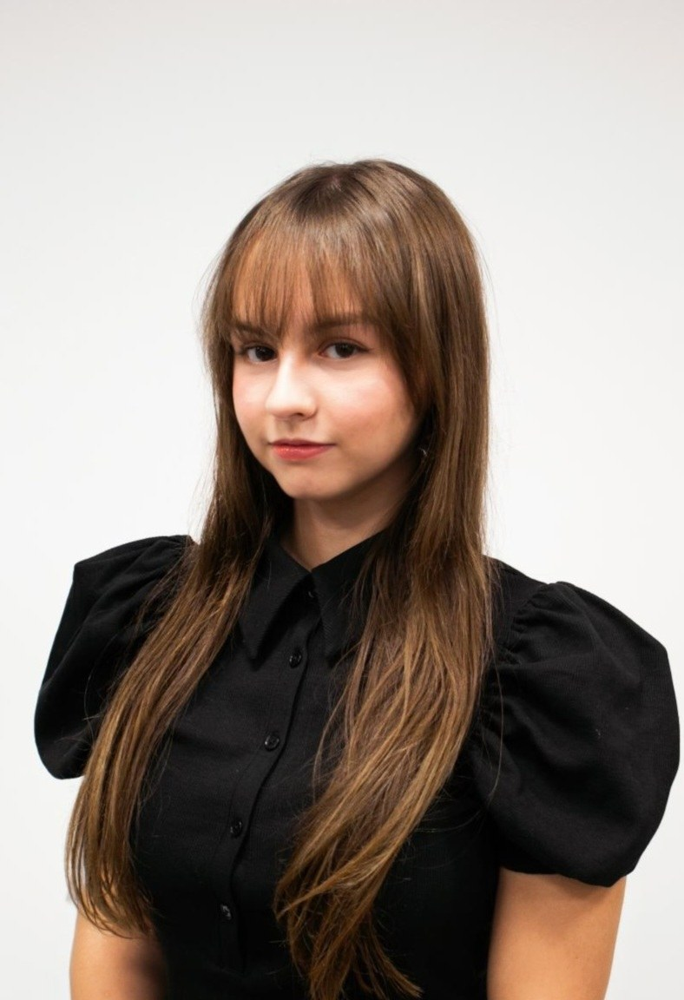

2024 to 2028
B.S. Computer Science
University of Pittsburgh
- Certificate of Fundamentals of Business
Open to new opportunities
I'm a B.S. Computer Science student.
at the University of Pittsburgh.

I am a Computer Science student at the University of Pittsburgh with a strong interest in data science, cybersecurity, and artificial intelligence. I am drawn to data analysis because I am a visual learner, and I enjoy seeing the data and its impacts clearly. My overall goal is to help people and make a meaningful impact on the world.
Outside of my academics, I am creative, curious, and open to new experiences and possibilities, and exploring is one of my favorite things to do. I enjoy music and performing. I am a self-taught dancer with a background in hip hop, and I enjoy learning in my free time. I am also a member of the Taekwondo Club at Pitt.
University of Pittsburgh
IBM SkillsBuild
University of Pittsburgh, Pittsburgh, PA
Courses: Big Ideas in Computing and Information; Discrete Structures and Mathematics for Computer Science
Dunkin Donuts, Edinboro, PA
Personal project, currently in development
SteelHacks team project, Java